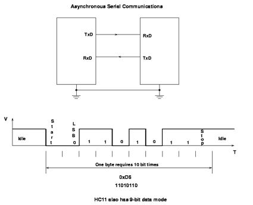

Artigos, tutoriais e Dicas - Carlos Delfino

Arduino - Protocolos Seriais
quarta-feira, 16 de abril de 2014

Talvez o protocolo Serial mais conhecido no contexto do Arduino é o Serial TTL, seguido pelo I2C, e depois o SPI. O Serial TTL é o protocolo usado na comunicação entre o Arduino e o computador através da porta USB, sendo usado na gravação do código e troca de dados. O Serial TTL também é utilizado por dispositivos como os Módulos GPS, xBee, BlueTooth, entre muitos outros, a grande vantagem do protocolo serial TTL é que não precisamos usar uma porta especializada para seu funcionamento, mesmo o Arduino tendo portas especificas para essa comunicação, porém o uso de portas genéricas acarretam perda de dados, e algumas podem não ser aptas totalmente ao funcionamento do protocolo.
Já o protocolo I2C (Inter Integrated Circuit) é amplamente usado para sensores, alguns displays LCDs também. Ele é muito utilizado para adicionar mais memória EEPROM externas em diversos projetos. O protocolo I2C é um protocolo que permite a comunicação com até 255 dispositivos além do master em um único barramento, e pode ser estendido por um gateway. Usa o barramento conhecido como TwoWire, já que usa apenas dois fios, ambos de Três estados. Um fio é o clock para sincronismo dos dados, e o outro é para transmissão de dados. Permitindo inclusive que haja mais de um master a cada momento de comunicação.
Já o SPI (Serial Perfiferal Inteface) é na verdade uma interface de conexão utiliza por padrão 3 pinos, sendo dois de transmissão em sentidos opostos (similar ao serial) e um terceiro para clock, o que lhe permite uma maior velocidade que o Serial TTL, podendo haver pinos de seleção dos dispositivos á que se destina o dado, é utilizado no Ethernet Shield que utiliza tanto para conectar o cartão SD como o chip Ethernet, além deste uso o SPI pode ser usado para conectar um processador ao outro e também para gravações do programa no Chip ATmega e ATtiny, sendo identificado pelo conector ICSP (In Circuit Serial Programing), já que permite a gravação do Controlador mesmo ele montado no circuito final.
No Arduino há diversas formas de se implementar Comunicação via portas e protocolos seriais, entre eles os mais utilizados são Serial TTL, I2C e ISP